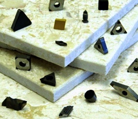
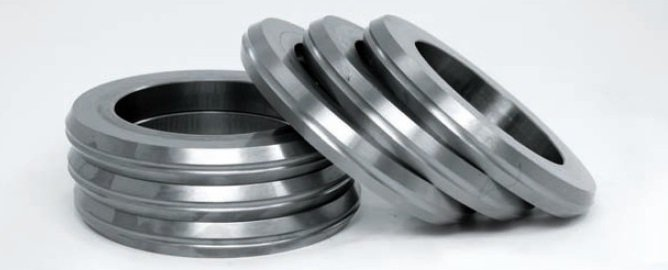
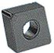
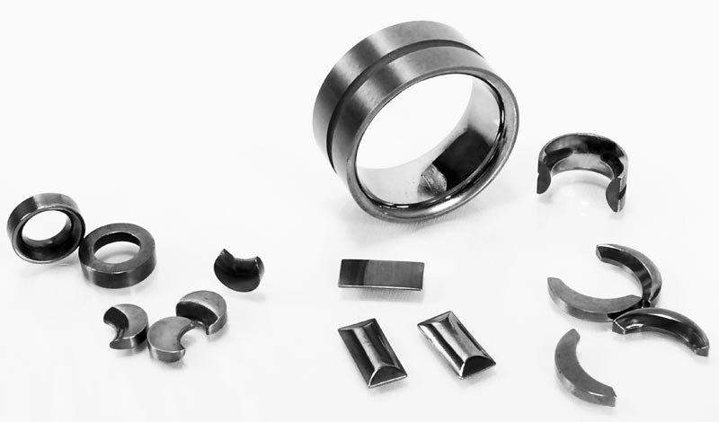
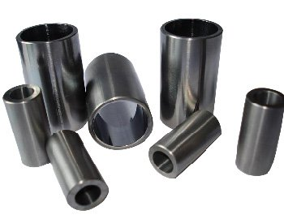
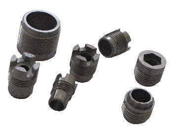
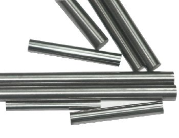
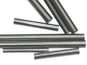

Přesné PKD, CBN a karbidové destičky pro nejnáročnější obrábění
Dodáváme standardizované ISO tvary i zakázkové speciální geometrie ze syntetického diamantu, kubického nitridu boru a slinutých karbidů. Vyzkoušejte bezplatné testování přímo ve vašem provozu.

Katalog řezných destiček a slinutých polotovarů
Kompletní přehled sortimentu pro obrábění neželezných kovů, kalených ocelí i litin. Filtrujte dle materiálu nebo otevřete technický list.
PKD standardizované ISO destičky
Vysoce přesné břitové destičky s polykrystalickým diamantem vpájeným do karbidového tělesa pro obrábění neželezných kovů a kompozitů.

Speciální tvarové PKD nástroje na zakázku
Zakázková výroba speciálních tvarů PKD břitů a profilových destiček dle individuální výkresové dokumentace zákazníka.

Masivní Solid CBN destičky pro těžké hrubování
Celistvé břitové destičky z plného kubického nitridu boru bez karbidového nosiče pro maximální hloubku řezu a oboustranné použití.

CBN destičky na nosné karbidové vrstvě
Hospodárné CBN destičky s jemným CBN hrotem slinovaným nebo vpájeným na tvrdokovovém těle pro dokončovací tvrdé soustružení.

Karbidové vyměnitelné břitové destičky (VBD)
Slinuté karbidové destičky vyráběné technologií práškové metalurgie pro univerzální soustružení a frézování kovových materiálů.

Karbidové válce pro válcování za studena i tepla
Vysoce namáhané válce a průvlaky ze slinutého karbidu dodávané jako polotovary i finální výrobky včetně kalibrování a drážkování.

Karbidová vodítka, těsnění, razníky a opěrné čepy
Přesné strojní součásti a polotovary z tvrdokovů pro náročné průmyslové aplikace, lisovny a výrobu střižných nástrojů.

CVD technologie – Výzkum syntetického diamantu
Výzkumné centrum v rámci projektu CZ.01.1.02/0.0/0.0/21_375/0027025 zaměřené na syntézu monokrystalického a polykrystalického diamantu.
Výkonnostní parametry řezných substrátů
| Řezný materiál | Tvrdost substrátu | Max. tepelná stálost | Obrobitelné materiály | Typické nasazení |
|---|---|---|---|---|
| PKD (Polykrystalický diamant) | cca 8 000 HV | cca 750 °C | Slitiny Al-Si, měď, kompozity CFRP, plasty | Vysokorychlostní obrábění bez železa |
| CBN (Kubický nitrid boru) | cca 4 500 HV | cca 1 200 °C | Kalená ocel 45-68 HRC, šedá litina, superslitiny | Tvrdé soustružení namísto broušení |
| Slinutý karbid (WC-Co) | 1 400 – 1 900 HV | cca 900 °C | Konstrukční oceli, nerez, litiny, titan | Univerzální frézování a soustružení VBD |
| Rychlořezná ocel (HSS) | 800 – 1 000 HV | cca 600 °C | Měkké oceli, kusová výroba, vrtáky | Tradiční nástroje s nižším úběrem |
Čtyři klíčové důvody pro volbu Superhard.cz
Individuální přístup a poradenství
Posoudíme vaše stávající nástroje, navrhneme optimální geometrii destiček a doporučíme řezné parametry pro zvýšení životnosti.
Bezplatné testování ve vašem provozu
Neriskujete! Nástroje si vyzkoušíte přímo na vašich strojích a platíte až v okamžiku, kdy jste s výsledkem plně spokojeni.
Široké portfolio substrátů
Bohatý výběr jakostí PKD, CBN a karbidových směsí pro přesné sladění s obráběným materiálem od hliníku po kalené oceli.
Konsignační sklad a rychlé dodávky
Pro sériovou výrobu držíme pojistné zásoby a zkracujeme dodací lhůty speciálních tvarů na minimum.
Ke stažení katalog a nabídka zaměstnání
Superhard PKD a CBN katalog (PDF)
Kompletní technická dokumentace rozměrů, geometrií a řezných doporučení v elektronické podobě.
Zaměstnání – Hledáme obchodní zástupce
Hledáme spolupracující obchodní partnery (obchodní zástupce s ŽL a vlastním vozem) pro prodej řezných nástrojů v ČR a SR.
Technické a obchodní vedení společnosti
Kontaktujte přímo jednatele nebo náš sekretariát pro technickou konzultaci, poptávku či sjednání návštěvy technika.
| Fakturační sídlo: | Superhard s.r.o., Konopná 344/14, Komárov, 617 00 Brno |
| Korespondenční adresa: | Mánesova 2661/62, 680 01 Boskovice |
| Identifikace: | IČO: 02993961, DIČ: CZ02993961 |
| Obecný e-mail: | info@superhard.cz |